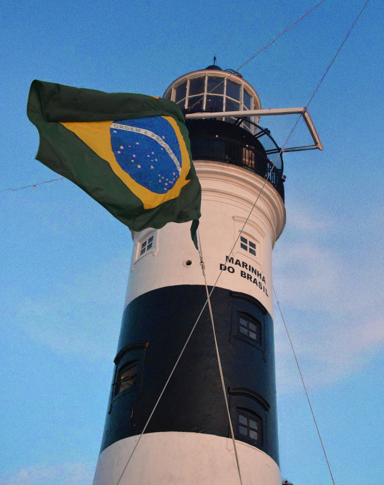

CONHEÇA O
FAROL DA BARRA!
Forte de Santo Antônio, na Barra, e é um dos pontos mais famosos de Salvador. Além de ajudar na navegação, ele tem uma vista linda do mar e da cidade. Um lugar ótimo para conhecer história e curtir o visual.